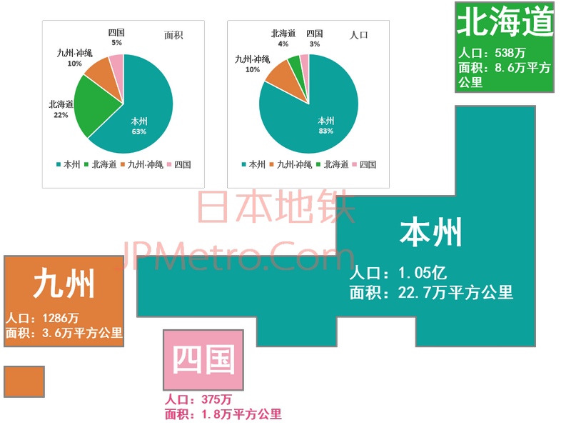
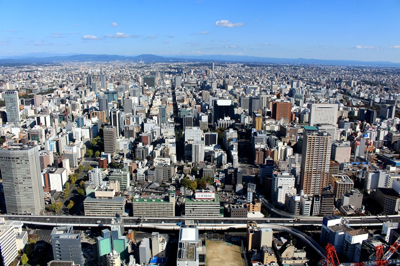
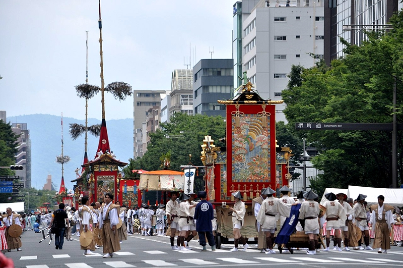
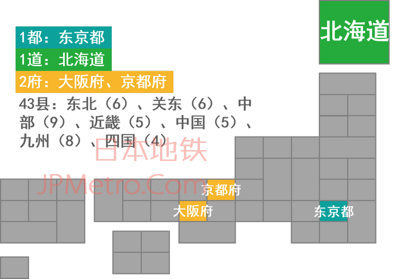

日本地区区划概述
条评论日本是一个由 6852 个岛屿组成的岛国，面积约 37.8 万平方公里，排名世界第 62 位。人口 1.26 亿，居世界第 11 位。日本全国共划分为由都道府县组成的 47 个一级行政区。本文将通过一组地图和照片带你快速的对日本有一个粗略的认知。
四大本岛
日本全国共有 6852 个岛屿，占据绝大多数土地和人口的是四大本岛。对于非日本当地的居民来说，一般较为熟悉的是根据地理上的概念，将日本列岛分为本州、北海道、九州和四国（有时也将四大本岛及琉球群岛合称五大本岛）。

本州
本州以约 60% 的土地面积，聚集了日本超过 80% 的人口，是日本面积最大也是人口最多的岛屿。本州岛古称秋津岛或秋津洲，现名「本州」意思是主要的岛屿。本州岛拥有日本的象征，同时也是日本第一高峰的富士山。
北海道
北海道是日本第二大岛，同时也是日本 47 个「都道府县」中唯一的「道」。北海道古称虾夷，明治维新后参考日本古时的东海道、西海道、南海道的划分，更名为北海道。地广人稀的北海道是日本重要的粮食产区，与本州岛之间有青函隧道相连。
九州
九州古称筑紫岛或筑紫洲，是日本第三大岛。狭义的九州仅指九州本岛，不过一般统计上也包括冲绳诸岛。通过多条海底隧道和跨海大桥与本州岛相连。
四国
四国岛是日本列岛中面积最小人口也最少的岛，古称伊予之二名岛或伊予二名洲。古代四国岛分属南海道中的赞岐国、阿波国、土佐国、伊予国，故而得名四国。与本州岛之间有三条跨海大桥相连。
八大地区
对于日本当地居民来说，较常使用一被称为 八地方区分 的划分概念，依照各地因历史、文化、经济发展、交通建设等的不同而逐渐形成的当地居民意识，将日本全国划分为北海道、东北、关东、中部、近畿、中国、九州、四国 8 个 地方。除北海道、九州与四国之外，其余五大地区均是本州岛的部分区域。八大地区中人口最多的是关东、中部和近畿，这三大地区也是首都圈、中京圈和近畿圈所在之地，同时也是日本最重要的政治、经济与文化中心。

北海道
北海道于明治维新后被完全纳入日本治下，不同于日本其他一级行政区，北海道在其下的市区町村（日本最基础的行政区）之上另设了 14 个振兴局。北海道全境 36% 的人口集中在札幌市，同时札幌市也是北海道的经济中心。
东北
东北地区古称奥羽，因位于本州岛的东北部而得名。陆地面积占本州岛的 30% 左右，从北至南包括青森、秋田、岩手、山形、宫城和福岛六县。经济中心是位于宫城县的仙台市。
关东
公元 672 年 壬申之乱 之后，日本天武天皇在东山道、东海道与北陆道分别设置了不破、铃鹿与爱发三个关卡用以拱卫京畿地区。从此之后，这三关两侧区域分别被习惯性的称之为关东与关西。今天的关东地区包括东京都以及群马、栃木、琦玉、茨城、千叶和神奈川六县。以东京都会区为核心的首都圈人口超过 3700 万，是日本的政治、经济与文化中心，同时也是世界上最大的都市圈。

中部
中部地区因位于本州岛中部而得名。包括山梨、长野、新潟、岐阜、静冈、爱知、富山、石川和福井九县。中部地区是串联东日本与西日本的重要经济、交通走廊，位于爱知县的名古屋市是中部地区最大的都市与经济中心，同时也是仅次于东京与大阪的日本第三大都市。

近畿
自公元 794 年日本桓武天皇迁都到京都（平安京）开始，直到明治维新前，京都都是日本的首都。环绕京都的大片区域也被称之为京畿地区，即使在东京成为日本首都之后，这个俗称也未曾改变，同时这也是近畿地区得名的由来。由京都与大阪二府以及滋贺、兵库、奈良、和歌山与三重五县组成的近畿地区是日本仅次于关东地区的第二大都市圈与经济圈。大阪市是近畿地区最大的都市与重要的经济、文化中心。

中国
中国地区指本州岛西部的鸟取、岛根、冈山、广岛与山口五县。这个说法源自平安时代，当时日本根据距离首都京都的远近程度，将全国划分为“近国”、“中国”与“远国”，其中的“中国”就是今天日本的中国地区。广岛市是该地区的经济中心与最大的都市。
九州
九州共有 8 个县，包括九州本岛的大分、宫崎、福冈、佐贺、长崎、熊本和鹿儿岛 7 县以及琉球群岛上的冲绳县。最大的都市是拥有 158 万人口的福冈市，同时福冈市也是福冈县县厅所在地。
四国
四国共有香川、德岛、高知和爱媛四县。香川县县厅所在地高松市因为距离本州岛较近，一直是四国对外联系的门户，日本中央政府机关和各大企业也大多将四国地区分支结构设在高松市。不过四国地区人口最多的都市则是爱媛县县厅所在地松山市。
四十七都道府县
日本明治维新之后于 1871 年进行了 废藩置县 改革，将原江户时代的各藩主领地直接变更为由中央政府直辖的 302 个县，同时还增设了东京、京都和大阪 3 府。这是日本历史上县级行政单位最多的一个时期，不过仅仅过了不到半年时间，日本就于 1872 年进行了第一次府县调整，将全国 302 个县缩减为 72 个县。其后日本又经历了若干次府县调整，县数减少到 40 左右。
随着 1886 年日本设立北海道厅并将北海道纳入治下之后，日本全国变成了 3 府 41 县 1 厅的局面。之后奈良县与香川县分别于 1887 年和 1888 年设立，至此形成了日本延续至今的 43 县格局。其后东京府于 1943 年变更为东京都，北海道于 1946 年由厅变道，正式形成了日本今天的都道府县格局。
二战后冲绳处于美国治下，日本一度变成了 1 都 1 道 2 府 42 县。随着冲绳于 1972 年复归，日本1 都 1 道 2 府 43 县（1 都 1 道 2 府为东京都、北海道、大阪府、京都府）的格局延续至今，未再发生过变更。


日本每一个都道府县都有独一无二的标识。下图是按照从北海道、东北、关东、中部、近畿、中国、四国与九州顺序排列的各县（都道府）标识。
冷知识
- 日本是一个四面环海的岛国，不过日本仍然有栃木、群马、琦玉、长野、岐阜、山梨、滋贺与奈良 8 个内陆县。
- 东京都市圈面积很大，但是东京都本身的面积在日本 47 个都道府县中排名倒数第三，同时冲绳也不是面积最小的县，日本面积最小的县是四国的香川县。
- 中国地区的人口近乎是四国地区的两倍，但是日本人口最少的两个县都来自中国地区，分别是岛根县和鸟取县。

参考文献
[1] 瓦叔. 一组简图，带你快速了解日本 [EB/OL].http://jpmetro.com/picture/basic-introduction-of-japan.html,2019-01-14.
[2] 维基百科. 日本地理分区 [EB/OL].https://zh.wikipedia.org/wiki/ 日本地理分区,2019-03-10.
[3] ウィキペディア. 日本の地域[EB/OL].https://ja.wikipedia.org/wiki/ 日本の地域,2020-08-05.